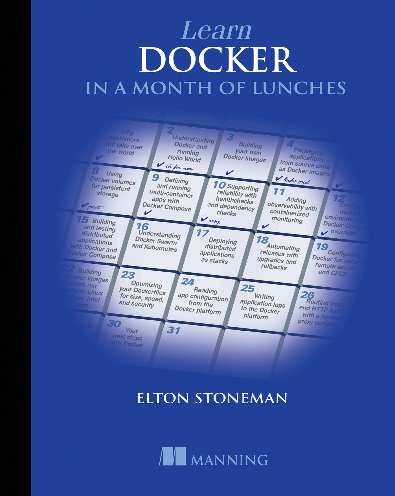
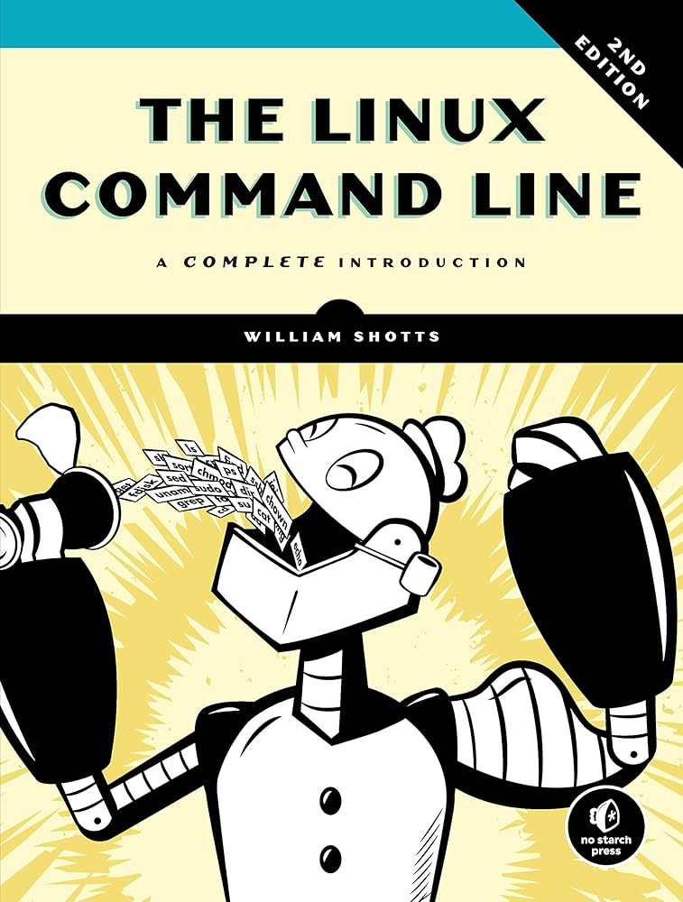
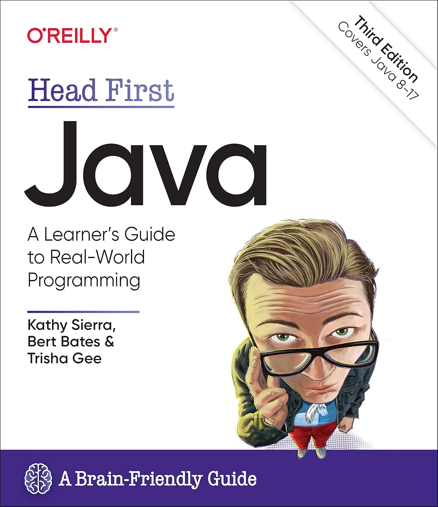
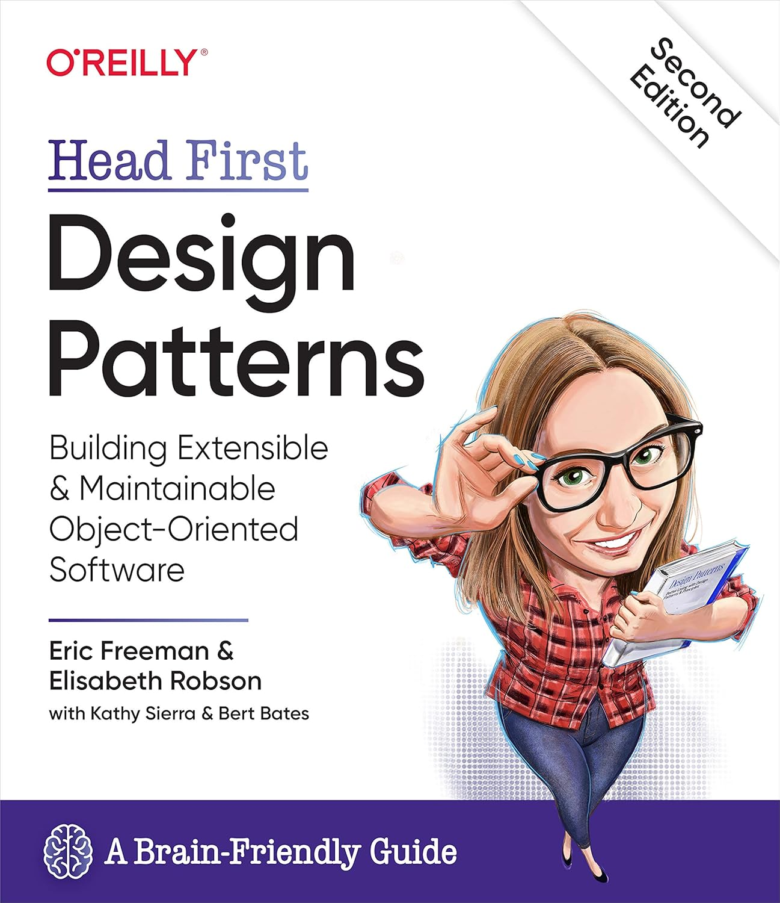
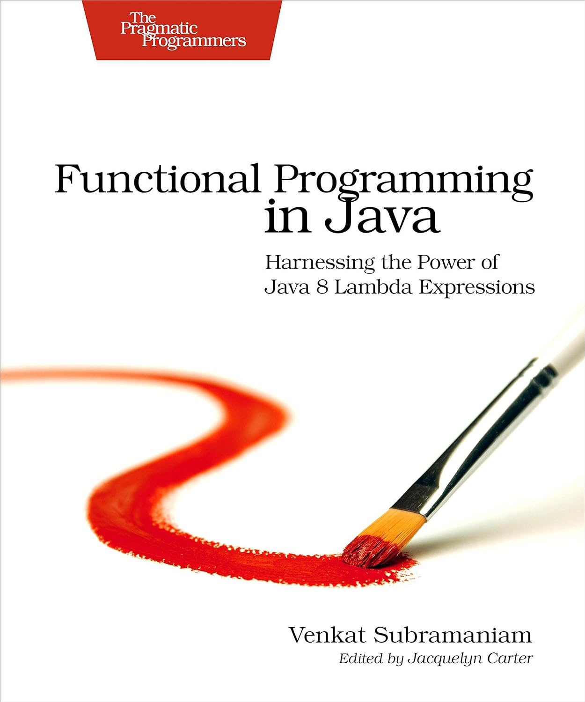

Read and recommended
-
 Clean Code
Clean Code
-  Learn Docker in a month of lunches
-
 Official Git User Manual
Official Git User Manual
-  The Linux Command Line
-  Head first Java
-  Head first Design Patterns
-  Functional Programming in Java
- More to be updated...